A shut sign holds the stream above it, and everything below runs thin and dark.
| Already built | This plan adds |
|---|---|
Meter, gates, pools and surges (model/mountain.ts) | Each sign's page holds touches written for that sign, not the old flows' rows |
What I write on the snow lifts off as spindrift; the stars lead to Be and my kept lines.
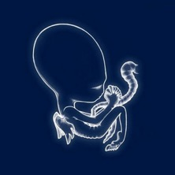
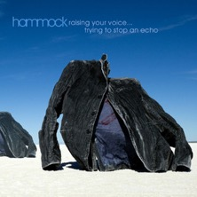
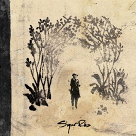
+| Touch | What it opens |
|---|---|
| Let go | one rule on the snow; the words are carried off and not kept |
| Core | Be, on "I determine my core." and the held values |
| Kept line | a star shows one kept line; a tap opens its journal page |
| Sit | follows the water to Meditate |
The question drifts out to the view, then opens on today's page or goes to the council.
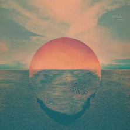
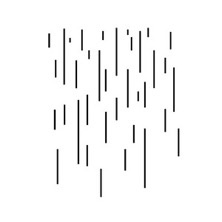
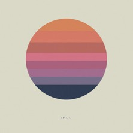
+| Touch | What it opens |
|---|---|
| Ask | today's page with the line set as a question, Turn to answer open (rule 17) |
| Bring it | Council, the question as the first line |
| Questions | the ? tab |
| Look far | a held thumb; the ranges clear one by one on the breath |
The sentence goes over the fall first, then out: to Messages, a call, or a voice in the council.
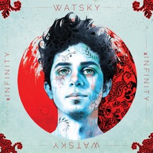
+| Touch | What it opens |
|---|---|
| Say it here | one rule at the lip; the words go over the fall, kept on the day |
| Send | Messages, the sentence filled in (sms:) |
| Call | the phone (tel:) |
| A voice | Council, with the voice chips ready |
The name sinks into the tarn and stays as a stone, with a friend one tap away.
| Touch | What it opens |
|---|---|
| Grieve | one rule on the tarn; the stone stays under the water on later visits |
| Reach | Messages to one person he chose |
| Letter | a journal page that opens on "Dear", never sent |
| Hold | a hand on the heart; the reflection steadies on the breath |
| 988 | printed here in every light, with Call and Text |
One thing with a time feeds the fire and lands in Calendar; a value in Be is what I stand on.
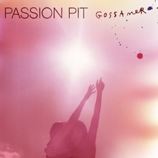
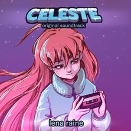
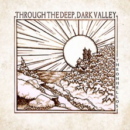
+| Touch | What it opens |
|---|---|
| I will | Calendar, the line and its time (calshow:) |
| Stand on | Be, a held value and who champions it |
| Spark it | Energize in the sea, the dot on its ride |
| Reword | two rules: the verdict struck (rule 10), the deed kept |
The word drops into the pool and rings out, and it can open today's page as its first line.
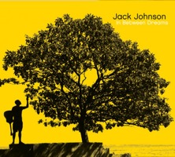
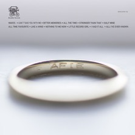
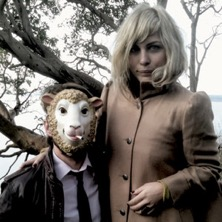
+| Touch | What it opens |
|---|---|
| Feel | one word on the pool, kept on the day |
| Write from it | today's page, the word as its first line |
| Hold | a thumb in the pool; a ring out on each out-breath |
| Move | this sign's shelf, playing |
Five things I can see become stepping stones, and four lanterns in the firs are the basics.
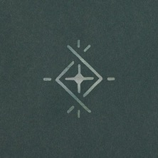
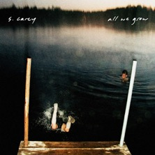
+| Touch | What it opens |
|---|---|
| Five | five rules drawn as stones (five) |
| Breathe | a thumb held on the water (ring) |
| Basics | four lanterns he lights for today; sleep lives here now |
| Reach | Messages to one safe person |
| 988 | printed here too |
The ♪ opens all seven shelves: a cover plays, the plus adds from my playlists, a long press lifts one off.
| Piece | How |
|---|---|
| Shelves | a shelves row per sign: albums as now, and written lines for shows, films, games, books, art |
| Plus | opens the ♪ grid and playlists he already has; the chosen cover travels to the shelf |
| Starters | three of his own seeded albums per sign, his to replace |
Back on the mountain the surge runs down through every sign below to the sea.
| Rule | Why |
|---|---|
| A touch moves water, never the reading | The gate is what he says is true; afterwards its handle goes dashed |
| Runs once, then still; no tally | DESIGN.md rules 31 and 15 |